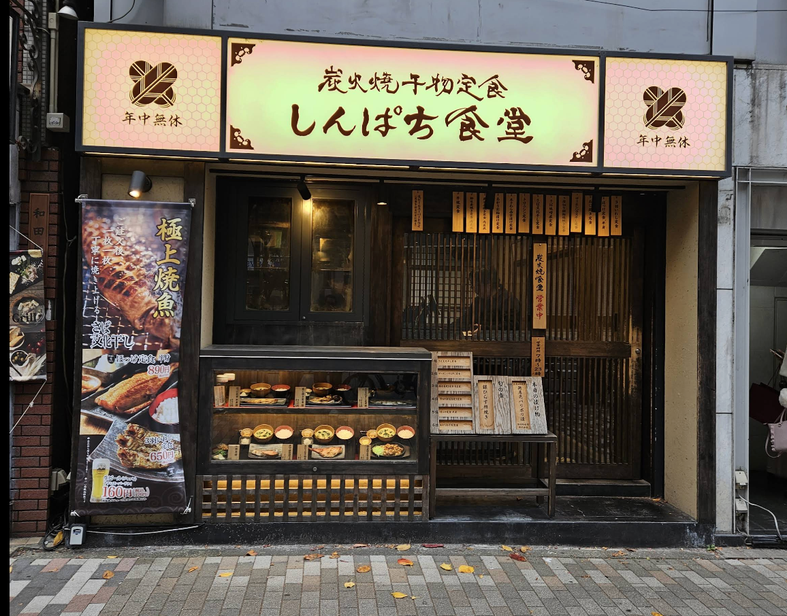
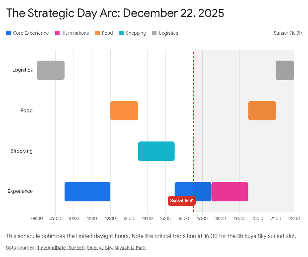
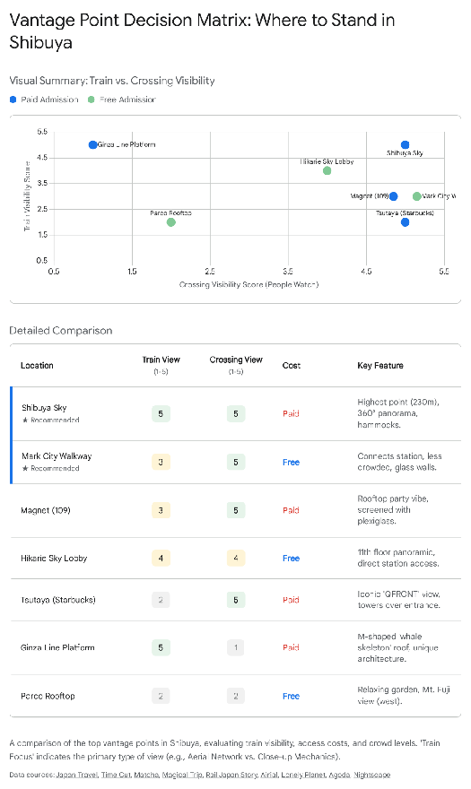

Shibuya & Harajuku Guide
Quick Suggestions
Curated list of spots in Shibuya and Harajuku.
| Location | Description |
|---|---|
| Breakfast: Shinpachi Shokudō Shibuya Meijidōri Google Maps |  Charcoal-grilled fish set meals. Authentic, healthy, and reasonably priced. Opens at 7:00 AM. |
| Lunch: Uobei Shibuya Dogenzaka Store Google Maps | High-speed chute delivery sushi. No rotating belt, made to order. Affordable and fast. |
| Lunch: Global Store Kura Sushi Google Maps | Global flagship store with a Harajuku aesthetic. Automated check-in, gamified eating (Bikkura Pon). Popular, book in advance. |
| Walk & Shop: Cat Street Google Maps | A hip haven of youth fashion and culture. Stretches about 1km between Shibuya and Harajuku. Pedestrianized backstreet with vintage shops and hipster coffee stands. |
Strategic Analysis of Shibuya & Harajuku for the Modern Family: A Comprehensive Itinerary & Resource Guide (December 22, 2025\)
1\. Executive Summary and Strategic Context
This report provides a comprehensive operational analysis and strategic itinerary for a family unit—comprising two adults and two adolescents (females, ages 13 and 15)—conducting a day-long expedition in the Shibuya and Harajuku districts of Tokyo on Monday, December 22, 2025\. The analysis is predicated on a start time of 08:00 AM and addresses the specific logistical constraints of the pre-Christmas period, including daylight hours, crowd dynamics, and the "viral" interests of the teenage demographic.
The date in question, December 22, 2025, sits at a critical intersection of temporal factors. It is the Monday immediately preceding Christmas, implying that while schools may be entering their winter recess, the full force of the end-of-year public holiday crowds (which typically peak after December 28\) may be slightly mitigated during the early morning hours. However, as a commercial hub, Shibuya operates on a "late-start" economy, creating a friction point between the user's desire to start at 08:00 AM and the general retail opening time of 10:00 AM or 11:00 AM. Furthermore, the winter solstice proximity dictates an extremely early sunset (approximately 4:31 PM), necessitating a rigid segregation of daylight-dependent activities (sightseeing, street fashion) and darkness-enhanced activities (illuminations, city views).
To satisfy the user's request for a "big list to prune down," this report adopts a "Core Track" vs. "Inventory of Alternatives" structure. For every temporal block, a primary recommendation is made based on the "Teenage Girl (13 & 15)" demographic profile—prioritizing visual engagement, social media "virality," and interactive experiences—followed by an exhaustive list of viable alternatives that allow the family to customize the day based on real-time energy levels and specific preferences.
---
2\. The "One Museum" Strategic Decision
Before delving into the chronological itinerary, the analysis must address the user's critical query: *"What is the ONE museum I should go to in Tokyo?"*
For a family with teenage girls aged 13 and 15, the definition of "museum" shifts from static historical preservation to dynamic, immersive engagement. The traditional contenders—The Tokyo National Museum (Ueno) and The Ghibli Museum (Mitaka)—face significant challenges for this specific demographic profile. The Tokyo National Museum, while housing the crown jewels of Japanese history, requires a high level of intrinsic interest in antiquity that may not sustain a teenager's attention for three hours.1 The Ghibli Museum is a masterpiece of whimsy, but it is small, geographically isolated in Western Tokyo, and tickets are notoriously difficult to secure, often selling out within minutes of release.3
The Verdict: teamLab Borderless (Azabudai Hills)
The unequivocal recommendation for this trip is teamLab Borderless: MORI Building DIGITAL ART MUSEUM, located in the new Azabudai Hills complex.
This facility represents the apex of Tokyo's contemporary art scene and aligns perfectly with the "Unique Sights" requirement. Unlike traditional museums where art is viewed passively, teamLab Borderless is a "mapless" world where artworks move out of rooms, communicate with other works, influence each other, and intermingle with visitors. For teenagers living in a digital-native ecosystem, this is not just art; it is a content-creation paradise and a sensory playground.3
Comparative Analysis: Borderless vs. Planets
A common point of confusion for visitors is the existence of two teamLab facilities in Tokyo: *Borderless* and *Planets*. It is crucial to distinguish them to confirm why *Borderless* is the superior choice for this itinerary.
- teamLab Borderless (Azabudai Hills): This is the flagship, permanent installation. It focuses on infinite discovery. The artworks are complex, intellectual, and visually overwhelming in their intricacy. The location in Azabudai Hills is central and accessible.
- teamLab Planets (Toyosu): This is a "body immersive" facility where visitors walk barefoot through water and garden areas. While novel, the logistical friction of removing shoes, rolling up pants, and navigating wet areas in December (even if heated) can be cumbersome. Furthermore, user reports indicate that the high-traffic barefoot nature can sometimes feel "grimier" than the pristine environment of Borderless.5 While *Planets* recently expanded with a new "Garden Area" in 2025 7, *Borderless* remains the more sophisticated, "museum-grade" experience suitable for older teens.

Action Item: Tickets for December 22, 2025, will be in high demand. They must be purchased exactly when the booking window opens (usually 2-3 months in advance) to secure a slot, ideally for a different day than the Shibuya itinerary, or as a late-morning activity if you choose to leave Shibuya.8
---
3\. Temporal Phase I: The Early Morning Strategy (08:00 AM – 10:00 AM)
The user's intention to arrive at 08:00 AM is strategically sound for photography but logistically challenging for consumption. Shibuya is a "sleeping giant" at this hour; the vast majority of retail and entertainment venues (Shibuya 109, Parco, Loft) do not open until 10:00 AM or 11:00 AM.10 Therefore, the first two hours must be dedicated to three activities: Transit/Photography, Breakfast, and Queue Management.
3.1 The "Empty Crossing" Opportunity
Arriving at Shibuya Station (Hachiko Exit) at 08:00 AM offers a rare glimpse of the Shibuya Scramble Crossing before the tourist crush intensifies.
- The Hachiko Statue: Located immediately outside the Hachiko Exit. At 8:00 AM, the queue to take a photo with the loyal dog statue is minimal. By 11:00 AM, this line can stretch for 20-30 minutes.13
- The Crossing Photo: Walk out into the center of the intersection during the green light. At this hour, the crowd is mostly commuters, lacking the frenetic "tourist chaos" of the afternoon, allowing for cleaner, architectural shots of the surrounding neon (even if dimmed in daylight).15
3.2 Breakfast: The Comprehensive Inventory
Finding a high-quality sit-down breakfast in Shibuya at 8:00 AM is the primary challenge. The "typical" Japanese breakfast is often eaten at home, leaving tourists with fast food or convenience stores unless they know where to look.17
The Primary Recommendation: bills Omotesando
For a family with teenage girls who appreciate aesthetics and "viral" food, bills Omotesando is the gold standard.
- The Vibe: Located on the 7th floor of Tokyu Plaza Omotesando Harajuku, it offers a stunning rooftop terrace view (Omohara Forest) and a bright, airy, sophisticated interior. It feels special—a "destination" breakfast rather than just fuel.18
- The Food: Famous for its Ricotta Hotcakes with honeycomb butter and banana. This dish is a global icon of cafe culture and highly photogenic.19
- Logistics: Opens at 08:30 AM. It is a short taxi ride or a 15-minute walk up Cat Street from Shibuya Crossing. Starting here allows you to walk *down* towards Harajuku/Shibuya as the shops open. Reservations are highly recommended.20
The "Big List" of Breakfast Alternatives
To satisfy the user's request for a list to prune, here is a categorized inventory of other viable 8:00 AM options in the vicinity:
Category A: The Traditional Japanese Experience
- Shinpachi Shokudo (Shibuya Branch):
- *Concept:* Charcoal-grilled fish set meals (teishoku).
- *Menu:* Grilled salmon, mackerel, or hokke with rice, miso soup, and pickles.
- *Why Choose It:* Authentic, healthy, and incredibly reasonably priced (under 1000 yen). It opens at 07:00 AM. This is the best option if the family wants a "real" Japanese breakfast experience.21
- *Location:* Udagawacho, near the main shopping drag.
Category B: The "Cool" Retro-Diner
- Buy Me Stand:
- *Concept:* A turquoise-themed American-style diner that looks like a 1950s movie set.
- *Menu:* Grilled cheese sandwiches, breakfast plates with eggs and toast (e.g., "Toad in the Hole").
- *Why Choose It:* Extremely stylish and popular with the fashion crowd. It opens at 08:00 AM. Located on the "New South" side of Shibuya (Namiki Bridge), which is a bit of a walk from the crossing but offers a glimpse of a cooler, quieter neighborhood.22
Category C: The High-End Bakery
- Viron (Shibuya Branch):
- *Concept:* An authentic French brasserie and boulangerie.
- *Menu:* The "Petit Déjeuner" set features a basket of their famous Retrodor baguette and pastries with high-end jams and honey.
- *Why Choose It:* Often cited as the best baguette in Tokyo. The atmosphere is authentically Parisian. It opens at 09:00 AM, so it requires a slightly later start or a leisurely photo session at the crossing first.17
Category D: The Reliable Chains (Safety Net)
- Royal Host (Dogenzaka): A "Family Restaurant" (Famiresu) that offers both Japanese and Western breakfast sets. Reliable, spacious, and opens at 09:00 AM.21
- Hoshino Coffee (Magnet by Shibuya 109): While snippets suggest 10:00 AM or 11:00 AM opening for some branches, the Shibuya 109 Magnet location is a prime spot for their famous soufflé pancakes. However, strictly check hours as they often align with the mall opening.23 *Correction:* Research indicates the Magnet branch opens at 10:00 AM, making this a "Phase II" option, not 8:00 AM.
- Koa's Pancake House: (If strictly 8 AM is needed, confirm hours, but many pancake spots are 10 AM).
Strategic Advice: If the family wants to maximize the "8 AM start," go to Shinpachi Shokudo for a 45-minute grilled fish breakfast, then spend the remaining hour walking through the quiet streets of Center-Gai and Spanish Slope (Supeinzaka) to take photos of the closed storefront shutters (often painted with graffiti art) before the crowds arrive.
---
4\. Temporal Phase II: The Retail Strategy (10:00 AM – 1:00 PM)
As the clock strikes 10:00 AM, Shibuya transforms. The shutters rise, and the "Morning Economy" gives way to the "Retail Economy." This phase focuses on the "Unique Sights" and "Shopping" requirements.
4.1 The Pop-Culture Core: Shibuya Parco (6F)
For teenage girls in 2025, Shibuya Parco is the single most important retail building in Tokyo. It is not just a mall; it is the epicenter of "Tokyo Pop."
- Nintendo Tokyo (6F): The first official Nintendo store in Japan.
- *The "Ticket" Warning:* In previous years, entry required a numbered ticket distributed at 9:00 AM or earlier. By late 2024/2025, on weekdays (like Mon Dec 22), this requirement is often relaxed to a walk-in queue, but since it is school holiday season, the risk remains.
- *Action:* Send one parent to the 1F Spain Hill Entrance at 9:30 AM to check if a line is forming. If yes, grab tickets. If no, head straight to the 6F at 10:00 AM opening.25
- *Merchandise:* Exclusive items like "Animal Crossing" kitchenware (pots, pans, oven mitts) and "Zelda" ties are high-quality souvenirs that transcend typical "toy" vibes.26
- Pokémon Center Shibuya (6F): Located on the same floor.
- *Unique Sight:* The entrance features a life-sized Mewtwo animatronic floating in a stasis tank. This is a mandatory photo stop even if you don't buy anything.27
- *Vibe:* Unlike other Pokemon Centers which are bright white/red, this one uses black graffiti art and sleek industrial design, specifically targeting the "Shibuya Street" aesthetic.
- Jump Shop (6F): For fans of *One Piece*, *Jujutsu Kaisen*, or *Haikyuu*. The trifecta of Nintendo/Pokemon/Jump on one floor creates a "Cyberspace" loop that can easily consume 90 minutes.
4.2 The "Big List" of Retail Alternatives
While Parco is the anchor, the following locations should be "pruned" based on interest:
- Shibuya 109:
- *The Lore:* The historical birthplace of "Gyaru" (gal) culture.
- *The Reality in 2025:* It remains a hive of fast fashion, accessories, and trend-driven cosmetics. It is loud, chaotic, and exclusively focused on young female fashion.
- *Target:* Excellent for buying cheap, trendy accessories, socks, and "purikura" (photo sticker) prep.11
- Shibuya Loft:
- *Concept:* A multi-story lifestyle store that elevates "everyday goods" to art.
- *Target:* The stationery floor (usually B1 or 1F) is dangerous for wallets. The selection of pens, stickers, washi tape, and planners is arguably the best in the world. A great spot for "unique sights" in terms of product design.10
- Mega Don Quijote (Shibuya Main Store):
- *Concept:* "Discount Jungle."
- *Target:* While chaotic, it is the best place to buy weird KitKat flavors, skincare products in bulk, and novelty socks. It is open 24 hours, so this can be a "filler" activity if you have a 30-minute gap.30
- Tokyu Hands (Shibuya Branch):
- *Concept:* "Creative Life Store."
- *Comparison:* More "DIY/Craft" focused than Loft's "Design/Lifestyle" focus. If the teens are into art supplies or cosplay making, Hands is superior. If they prefer cute stationery and gifts, Loft is superior.
---
5\. Temporal Phase III: The Culinary Landscape (Lunch: 1:00 PM – 2:30 PM)
Lunch in Shibuya/Harajuku should be an "activity," not just a meal.
The Primary Recommendation: Kura Sushi Harajuku "Global Flagship"
This is not just lunch; it is a theme park of sushi.
- The Concept: A "Global Flagship" store designed by creative director Kashiwa Sato, specifically tailored to the Harajuku aesthetic (lanterns, festival vibes, neon).32
- The Experience:
- *Entry:* Automated check-in.
- *Ordering:* Touch panels at the table.
- *Delivery:* A high-speed "express belt" zooms ordered plates to your table.
- *Gamification:* This is the "killer app" for teens. After finishing a plate, you slide it into a disposal slot at the table edge. Every 5 plates triggers a "Bikkura Pon" animation on the screen (an anime battle or game). If you win, a physical capsule toy (gachapon) is dispensed from a machine above the table. It turns eating into a strategic game.33
- The Menu: Beyond sushi, they serve ramen, tempura, and even "Sushi Crepes" (deep-fried rice wrapped in soy paper with cream cheese)—a nod to the Harajuku location.
- Logistics: Critical Warning. This location is incredibly popular. You must download the Kura Sushi app and book a time slot in advance, or grab a numbered ticket at the door early (potentially during the 10:00 AM retail transition) and return later. Without a booking, wait times can exceed 90 minutes.34
The "Big List" of Lunch Alternatives
If Kura Sushi is too crowded or sushi isn't preferred:
- Pepper PARLOR (Tokyu Plaza Shibuya 5F):
- *The Hook:* A café staffed by SoftBank's "Pepper" humanoid robots.
- *Experience:* Robots greet you, interact at the tables (games, fortune telling), and occasionally perform synchronized dances.
- *Menu:* Waffles (savory and sweet) and afternoon tea sets.
- *Why for Teens:* It’s highly Instagrammable and feels "futuristic Tokyo" in a quirky, slightly uncanny way. A uniquely Japanese technological experience.36
- Uobei Sushi (Dogenzaka):
- *The Alternative:* If Kura is full, Uobei is the "Genki Sushi" style alternative. It has no rotating belt; *everything* is made to order and delivered via high-speed chute. It feels like eating on a spaceship. Very affordable and fast.39
- Taco Bell (Shibuya):
- *Note:* The user snippet mentions this 39, but unless the family is craving a taste of home, this is generally a low-priority option for a unique Tokyo trip.
- Street Food Crawl (Alternative Strategy):
- Instead of a sit-down meal, graze through Harajuku (see Phase V).
---
6\. Temporal Phase IV: The Urban Traverse (2:30 PM – 4:00 PM)
Do not take the train from Shibuya to Harajuku. The walk is a geographical narrative of Tokyo's youth culture.
The "Cat Street" Connector
The route from Shibuya to Harajuku via Cat Street (Kyu-Shibuya-gawa Yuhodoro) is the recommended path.
- The Vibe: This is a pedestrianized backstreet built over a covered river. It is the "Ura-Harajuku" (Back Harajuku) zone. It is quieter, cooler, and lined with vintage shops, sneaker boutiques (Atmos, Kicks Lab), and hipster coffee stands.40
- Why for Teens: It feels like a discovery. The shops here (ragtag, Chicago, various vintage lofts) offer the "thrifting" experience that is currently massive with Gen Z. It contrasts sharply with the commercialism of the main roads.
The "Takeshita" Chaos
Cat Street eventually spits you out near Omotesando. From there, you dive into Takeshita Street.
- The Experience: This is the famous 400-meter street of intense crowds and "Kawaii" culture.
- Unique Sights:
- Purikura (Print Club): Go into the basement of one of the large arcades (like the one near the station end). Taking "Purikura" is a mandatory cultural ritual. The machines enlarge eyes, smooth skin to porcelain levels, and allow you to decorate the photos with digital stamps. It is a quintessential Japanese teen bonding activity.13
- Daiso (The Giant 100 Yen Store): The Harajuku Daiso is a multi-story landmark. Great for cheap, fun souvenirs (erasers, snacks, stationery).
---
7\. Temporal Phase V: The Sweet Sector (Afternoon Snack)
Teenage travel in Tokyo is often fueled by sugar and viral aesthetics. The user asked for "new foods/desserts."
The "Fluffy Pancake" Dissertation
Tokyo's "Soufflé Pancakes" are an engineering marvel—taller, wobblier, and fluffier than any Western counterpart.
- Primary Recommendation: Flipper's (Shibuya/Omotesando):
- *Claim:* "Miracle Pancake." They are so soft they are served with two forks because a knife would crush them.
- *Vibe:* Yellow, bright, cheerful.
- Alternative: A Happy Pancake (Omotesando):
- *Claim:* Uses Manuka honey and Hokkaido butter. Often cited as the fluffiest of them all.43
- Alternative: Hoshino Coffee (Magnet by Shibuya 109):
- *Claim:* A slightly denser, more "cake-like" soufflé pancake. The advantage here is the view. You can sit by the window and look down at the Shibuya Crossing while eating.45
The "Viral Street Food" List
- 10-Yen Bread (10-Yen Pan): A TikTok sensation. It is a waffle shaped like a giant 10-yen coin, filled with a massive block of mozzarella cheese. When pulled apart, the cheese stretch is the point of the video.
- *Location:* Mega Don Quijote Shibuya often has a stall, or look for vendors in the Center-Gai area.47
- Harajuku Crepes: The classic. Marion Crepes or Santa Monica Crepes on Takeshita Street. Plastic food displays show hundreds of variations (cheesecake, brownies, tuna salad). It is a rite of passage.49
- Candied Strawberries (Ichigo Ame): Crunchy sugar shell over fresh strawberries. Simple, beautiful, and delicious. Found at specialized stalls in Harajuku.49
---
8\. Temporal Phase VI: The Christmas Transformation (4:00 PM – Evening)
As the sun sets at 4:31 PM 51, the city changes. This answers the user's question: *"Should we come at night instead?"* You must be there for the transition.
8.1 The Sunset Summit: Shibuya Sky
- The Strategy: You must pre-book tickets for the 15:40 (3:40 PM) or 16:00 (4:00 PM) slot.
- The Experience: An open-air observation deck 229 meters above the crossing. Watching the sunset (approx. 4:30 PM) and the city lights turning on (The "Magic Hour") is the definitive Tokyo view.
- Photo Spot: The "Sky Edge" corner is famous, but the escalators riding up the side of the building are equally photogenic.21
- Contingency: If it rains or winds are high, the roof closes. The indoor gallery (46F) is still nice but lacks the visceral impact. In that case, consider the Shibuya Hikarie Sky Lobby (11F) which is free and indoor.14
8.2 The "Christmas-Centric" Events
After descending from Shibuya Sky (approx. 5:30 PM), execute the illumination loop.
- Stop 1: Ao no Dokutsu (Blue Cave):
- *Location:* Walk up Koen Dori (Park Street) toward Yoyogi Park.
- *The Visual:* Approximately 600,000 blue LEDs line the Zelkova trees for 800 meters. A reflective sheet is often placed on the ground to create a mirror effect, immersing you in a 360-degree blue tunnel. It is arguably the most famous winter illumination in Tokyo.
- *Timing:* 17:00 – 22:00..54
- Stop 2: Miyashita Park Christmas Market:
- *Location:* Loop back to Miyashita Park (a rooftop park/mall complex on the train tracks).
- *Event:* Shibuya Christmas Market 2025.
- *Vibe:* While Yoyogi Park sometimes hosts a "Hawaiian" market, Miyashita Park usually hosts the "European" themed market with hot wine (Glühwein), sausages, and festive trinkets. It is a modern, youthful take on the German tradition.57
- Stop 3: Omotesando Illumination (Optional Extension):
- If you have energy left, the main Omotesando avenue (the "Champs-Élysées of Tokyo") is lined with champagne-gold lights. It is sophisticated and classy, contrasting with the intense blue of the Blue Cave.
---
9\. Operational Logistics and Contingencies
Night vs. Day: The Final Verdict
To answer the user's specific question: "Should we come at night instead?"
Insight: You cannot choose one.
- Daytime (10 AM \- 4 PM): Essential for retail. Harajuku's Takeshita Street is a "daylight" aesthetic; the colorful fashion looks best in the sun. Shops close relatively early (8-9 PM).
- Nighttime (4:30 PM \- 9 PM): Essential for atmosphere. Shibuya Crossing is most impressive at night when the neon screens blaze against the dark sky. The Blue Cave and Christmas Markets are exclusively night events.
- Conclusion: The hybrid "Early Start, Late Finish" approach is the only way to capture the full spectrum of the district.
Weather Contingency
Tokyo winters are dry and sunny, but if it rains on Dec 22:
1. Cancel: Shibuya Sky (Roof closes) and Blue Cave (Miserable in rain).
2. Activate: Shibuya Parco (Vertical indoor mall), Tokyu Plaza (Indoor shopping), and Shibuya Hikarie (Theatres and dining).
3. Museum Shift: If it rains, the value of teamLab Borderless (fully indoor) triples.
This itinerary provides a structured yet flexible framework. By anchoring the day with "High Value Targets" (Bills, Nintendo, Kura Sushi, Shibuya Sky) and surrounding them with a "Big List" of pruning options, the family can navigate the chaotic energy of Shibuya with the precision of a local expert.
The Kinetics of Chaos: A Comprehensive Field Guide to Observing Rail Operations at Shibuya Crossing
1\. Introduction: The Intersection of Pulse and Piston
Shibuya Crossing is frequently reduced to a singular, flattening image in the global imagination: the iconic "scramble." It is the visual shorthand for Tokyo’s density—a synchronous explosion of humanity where up to 3,000 pedestrians intersect every ninety seconds. It is the establishing shot for every film about Japan, a chaotic ballet of umbrellas and neon that signifies the overwhelming magnitude of the metropolis.1 However, to view this location merely as a pedestrian phenomenon is to ignore the mechanical heart that pumps the blood into this urban artery. Shibuya is, fundamentally, a creature of the railway. It exists solely because of the convergence of four major rail operators—JR East, Tokyo Metro, Tokyu Corporation, and Keio Corporation—and nine distinct lines that handle millions of passengers daily.2
The inquiry posed—"Do I literally watch trains go by?"—touches on the physical reality behind the postcard image. It asks for a verification of the tangible in a space that often feels like a digital simulation. The answer is a nuanced "yes," but it requires a recalibration of perspective. Standing at ground level in the dead center of the scramble, the immediate sensory field is dominated by digital signage, vehicular traffic, and the sheer wall of pedestrians. The trains are present—audible as a rhythmic rumble, visible as flashes of silver and green in the periphery—but they are often obscured by the very density they create. To "literally" watch trains go by, one must engage with the verticality of Shibuya. The district is a three-dimensional labyrinth where trains run underground, at grade, and high in the air.
This report serves as an exhaustive guide for the rail enthusiast, the urban photographer, and the observant traveler. It dissects the topography of Shibuya Station to reveal exactly where, when, and how to observe the kinetic dance of Tokyo’s rolling stock. From the subterranean depths of the Fukutoshin Line to the aerial spectacle of the Ginza Line’s new "M-shaped" platform, and finally to the stratospheric vantage of Shibuya Sky, we will map the observation points that transform the chaotic scramble into a coherent ballet of transport. We will explore the "Greater Shibuya" redevelopment projects that have radically altered sightlines in the last five years, offering views that did not exist a decade ago. We will examine the specific rolling stock visible from each vantage point, the optimal times for photography, and the sensory experience of watching the heavy rail of the JR Yamanote Line contrast with the futuristic glide of the Tokyo Metro.
2\. The Topographic Imperative: Why Shibuya is a Valley of Trains
To understand where to stand, one must first understand what is moving and where it is located relative to the observer. Shibuya Station is not a single building but a sprawling, multi-layered organism that has been under near-constant construction for a century. The "literal" visibility of trains depends entirely on which line one is targeting, a factor dictated by the unique geography of the Shibuya district.
Shibuya is, geographically, a valley. The name itself—"Shibuya"—translates roughly to "Bitter Valley" or "Astringent Valley." The station sits at the bottom of a topographical depression formed by the Shibuya River.4 This geological reality is the primary reason why trains are visible here in ways they are not in other parts of Tokyo. While most subway lines in the world stay underground, the depression of the valley floor means that subway lines running at a constant elevation suddenly find themselves popping out into the open air as the ground drops away beneath them.
2.1 The Vertical Anatomy of the Station
The station complex is a vertical layer cake of transport infrastructure. Understanding this verticality is crucial for the observer, as "watching trains" is an activity that changes drastically depending on the floor level.
- The Aerial Layer (3rd Floor): The Tokyo Metro Ginza Line. Because of the valley topography, this subway line emerges from the hillside and crosses over the streets on a viaduct, entering the station at the third-story level. This makes it the most visible line from the street.5
- The Surface Layer (2nd Floor / Grade): The JR Lines (Yamanote, Saikyo, Shonan-Shinjuku). These heavy rail lines run on an embankment that cuts north-south through the district. They are elevated relative to some streets but at-grade relative to the main station concourse.6
- The Subterranean Layer (B1F \- B5F): The Hanzomon, Den-en-toshi, Fukutoshin, and Toyoko Lines. These are buried deep underground. The Fukutoshin and Toyoko lines, for instance, are located five stories down (B5F) in a massive underground cavity often compared to a spaceship or a "geo-front".7
The visibility of the train is therefore a function of the observer's altitude. At ground level (the crossing), the Ginza line is a ceiling and the JR lines are a wall. To see them as moving objects, one must change perspective.
3\. The Summit: The "God's Eye" View from Shibuya Sky
For the observer seeking the comprehensive, panoramic view of the entire rail system—the "God’s eye view"—there is no competitor to Shibuya Sky.2 Located atop the Shibuya Scramble Square tower, rising 230 meters above the streets, this is the highest vantage point in the district and arguably the premier train-watching spot in Tokyo for sheer scale.
3.1 The Observation Experience
Shibuya Sky is an open-air observation deck, a rarity in a city where most high views are enclosed behind thick glass. The experience begins with an ascent in the "Transition Pod" elevators, which use lighting and sound to prepare the visitor for the reveal.9 Upon stepping out onto the "Sky Stage" (the rooftop), the visitor is hit by the wind and the roar of the city, unfiltered by glazing.
From a rail enthusiast's perspective, the "Sky Edge"—a corner of the roof with lower glass barriers—offers a direct, vertigo-inducing sightline down onto the spine of the station.7 The view is strictly top-down, transforming the massive 11-car JR trains into model sets. The observer can trace the path of the Yamanote Line (green) and the Saikyo/Shonan-Shinjuku Lines (orange/blue) as they snake through the concrete canyon of buildings.
3.2 What You "Literally" See
From this height, the "literal" experience of the train is detached. You do not feel the wind of the train passing, nor do you hear the screech of the wheels over the ambient city noise. It is a clinical, majestic view of the *network* rather than the *machine*.
- The Network Effect: You can see the trains entering the station from the north (Harajuku direction) and the south (Ebisu direction). You can witness the synchronization of the schedule—how a northbound Saikyo train might pass a southbound Yamanote train exactly at the crossing point.
- The Crossing Context: The visual juxtaposition here is powerful and unique. One can frame the Shibuya Scramble crossing in the foreground with the rail lines feeding into it. It illustrates the symbiotic relationship between the train schedule and the pedestrian surge; as a train arrives, the "tank" of the station fills, and when the traffic lights change, the flood is released into the crossing.7
3.3 Strategic Considerations for the Visitor
- Admission and Booking: This is a premium experience. Tickets cost approximately 2,000 to 2,500 JPY and must often be purchased in advance, particularly for the sunset slots.2
- Weather Vulnerability: Because it is open-air, the rooftop is subject to closure during high winds or rain. However, the facility includes an indoor observation deck on the 46th floor ("Sky Gallery"), which offers similar views through floor-to-ceiling glass, ensuring the trip is not wasted even in inclement weather.9
- Photography Constraints: Tripods are strictly prohibited on the open-air roof for safety reasons. Photographers must rely on high shutter speeds or high ISOs at night. The indoor deck allows for bracing cameras against the glass, though reflections are a challenge that requires a lens skirt or careful positioning.13
4\. The Theatre of the Street: The Ginza Line Spectacle
If Shibuya Sky is about the macro view, the street-level interaction with the Tokyo Metro Ginza Line is about the micro-spectacle of engineering. For the user asking if they can "literally watch trains go by" from the street, this is the most emphatic "yes."
4.1 The History of the "Flying Subway"
The Ginza Line is Tokyo's oldest subway, inaugurated in 1927\. For decades, its Shibuya terminus was a cramped, confusing platform located inside the Tokyu Department Store building. You couldn't really "see" the station; the trains just disappeared into a building wall. However, in a massive engineering project completed in January 2020, the station was moved approximately 130 meters east and rebuilt entirely over the street.3
4.2 The M-Shaped Architecture
The new station is defined by its spectacular M-shaped steel arches. This structure is not merely a roof; it is a frame through which the trains are viewed. The design is intended to be permeable, allowing light and air to flow through, and importantly, allowing sightlines from the street up to the trains.3
- The "Whale" Metaphor: Observers and architectural critics have described the station as looking like the skeleton of a whale that has swallowed the trains. The ribs of the "M" create a rhythmic visual barrier that reveals the yellow skin of the 1000 series trains as they glide through.3
- The View from Beneath: Standing on Meiji-dori (the main avenue running beneath the station) or near the Shibuya Hikarie East Exit, one can look directly up at the underbelly of the tracks. This is one of the few places in central Tokyo where a subway train becomes the dominant architectural feature of a streetscape. The bright lemon-yellow livery of the Ginza Line trains—a deliberate homage to the original 1927 Berlin-style cars—contrasts vividly with the grey steel and glass of the surrounding skyscrapers.5
4.3 The "Literal" Experience at Street Level
To answer the user's specific request about "where to stand/go to do this best":
- Location: Exit the station on the East side (Hikarie side). Walk north along Meiji-dori towards Harajuku.
- The Action: Look up. Every 2-3 minutes, a train will rumble overhead. You are physically close enough to hear the distinct whine of the electric motors and the click-clack of the wheels on the expansion joints. It is a visceral, noisy, and impressive display of heavy infrastructure operating in a dense pedestrian zone.
5\. The Commuter’s Catwalk: Shibuya Mark City Walkway
For the rail enthusiast who wants an authentic, close-up, and entirely *free* viewing experience, the Shibuya Mark City Walkway is the hidden gem of the district. While often overlooked by tourists who flock to paid observation decks, this spot offers what is arguably the most intimate view of the JR operations.1
5.1 The Location and Access
This vantage point is a glass-walled corridor that connects the JR Shibuya Station (lines 2F) to the Keio Inokashira Line station (in the Mark City building to the west). To find it, one must navigate to the "mythical" bridge that seems to float between the buildings. From the Hachiko exit, look for signs pointing to the Keio Inokashira Line. As you ascend the escalators or stairs to the connecting bridge, you will find yourself in a wide, glazed passage running parallel to the Scramble Crossing.15
5.2 The "Literal" Train Experience
- The Yamanote Broadside: As you walk from the JR side toward Mark City, the windows on the left (south) offer a direct, broadside view of the Yamanote and Saikyo line trains entering the station. Because the walkway is elevated (approx. 3rd floor equivalent), you are nearly at eye level with the train drivers. The proximity is striking; you can see the passengers inside the trains, the wear on the steel rails, the mechanical pantographs sparking against the overhead wires, and the conductor pointing and calling signals.7
- The Crossing View: This walkway also provides one of the best free views of the Scramble Crossing itself.15 The glass walls allow you to press up against the pane and look straight down into the crowd. This creates a dual-layer viewing experience: the chaotic organic movement of the crowd below, juxtaposed with the linear, mechanical movement of the trains beside you.
- The Atmosphere: Unlike the polished, museum-like quiet of Shibuya Sky, this is a working commuter artery. It is busy, purposeful, and gritty. It captures the frantic energy of Tokyo transit perfectly. You are *in* the system, not just observing it from a detached height.
5.3 Reliability in Flux
The Shibuya station area is infamous for being under eternal renovation—a "Sagrada Familia" of Tokyo. Some older guidebooks might reference views that have been obscured by construction hoardings or new buildings. However, recent reports from late 2024 and early 2025 confirm that while the station surroundings have changed, this specific viewing corridor remains a reliable and unaffected vantage point.16 It is shielded from the elements, open from first train to last (approx. 5:00 AM to 12:30 AM), and costs absolutely nothing.
6\. The Theatrical Stage: Shibuya Hikarie Sky Lobby
Moving to the east side of the station, the Shibuya Hikarie building offers a vantage point that is often described as "theatrical," a fitting descriptor for a building that houses the Tokyu Theatre Orb.7
6.1 The 11th Floor Sky Lobby
Access to the 11th floor is free via large elevators from the ground floor. This space serves as the lobby for the theatre and office levels, but it features massive, multi-story floor-to-ceiling windows overlooking the station complex. It is a spacious, air-conditioned environment that feels like a premium lounge but is open to the public without a ticket.7
6.2 The Diorama Effect
From this height (approximately 60-70 meters), the view is distinct from both the "God's eye" of Shibuya Sky and the "face-to-face" of Mark City.
- Distance and Scale: Hikarie is set slightly back from the tracks compared to Scramble Square. This distance allows for a panoramic view of the entire station layout. You can see the Ginza line snaking out of the M-shaped station and heading into the tunnel toward Omotesando. You can see the JR lines cutting across the landscape. The trains appear large enough to distinguish specific models but small enough to see their movement through the city context.
- The Living Diorama: The lobby actually houses a physical diorama of the Shibuya redevelopment 22, but the real view out the window turns the actual trains into a living diorama. It is an ideal spot for understanding the *flow* of the trains—how they bend and curve around the topography of the valley.
- Night Viewing: This is an exceptional spot for night photography. The trails of light from the trains and the cars on the scramble crossing below create a vibrant tapestry of motion. Since it is indoors, it is a comfortable spot to linger in winter or summer, free from the wind and noise of the outside world.20
7\. The Commercial Spectators: Cafes and Rooftops
While free spots are excellent, sometimes the best way to "watch trains go by" is with a drink in hand. Several commercial establishments have monetized their proximity to the tracks, though the quality of the "train view" varies significantly.
7.1 Starbucks (Shibuya Tsutaya QFront)
This is arguably the most famous coffee shop in the world. For decades, it was the go-to spot for watching the crossing.
- Status Update (2024/2025): The Tsutaya building closed for major renovations and reopened in April 2024\.23 The new Starbucks on the 2nd floor still offers the iconic view of the crossing, but the layout has changed to accommodate more takeaway traffic and merchandise.
- Train Visibility: Low. From this low angle (2nd floor), the view of the JR tracks is largely blocked by the station infrastructure itself. You are watching the *result* of the trains (the people), not the trains themselves. While you can see the embankment, the actual rolling stock is often obscured by walls and barriers. It is not recommended for pure train-spotting.
7.2 Mag’s Park (Magnet by Shibuya 109\)
Located on the rooftop of the Magnet building (formerly 109 Men’s), this open-air event space charges a small admission fee (often including a drink).26
- The Angle: It is located directly above the scramble crossing, offering a steep, plunging view.
- Train Visibility: Medium. Similar to Starbucks, the primary focus is the pedestrian scramble. However, because it is on the roof (Rooftop/8F), the angle is high enough to glimpse over the station structures to see the movement of the JR lines on the embankment. It provides a "contextual" train view—seeing the train in relation to the skyscrapers and the crowd. It is a better option than Starbucks for photography due to the lack of glass reflections (it is open-air, though sometimes screened with Plexiglas).26
7.3 Shibuya Stream Hotel / Excel Hotel Tokyu
- Shibuya Excel Hotel Tokyu: The cafes and restaurants on the upper floors (like *Estacion Café*) offer bird's-eye views of the crossing. The visibility of trains is high from the rooms facing the station, making it a prime choice for a "rail view" hotel stay. However, access to the best views often requires a reservation or a room key.8
- Shibuya Stream: Located to the south, the Shibuya Stream complex (built on the former Toyoko line tracks) has open plazas and bridges that look directly onto the exposed JR tracks. This is a quieter, more modern vantage point where you can see the underbellies of the trains on the elevated tracks.4
8\. The Quiet Alternative: Parks and Promenades
The user might find the sensory overload of the Scramble Crossing exhausting. Is there a place to watch trains in peace?
8.1 Miyashita Park (North Side)
Located along the tracks to the north of the station, Miyashita Park is a low-rise complex with a rooftop park.12
- The Rail Corridor: This park runs *parallel* to the Yamanote line. It serves as a linear promenade dedicated to the railway. The chain-link fencing and mesh design can make photography tricky, but for "literally watching trains," it is superb. You are walking alongside the tracks at a similar elevation.
- The Experience: You can grab a coffee, sit on a bench, and watch the Yamanote trains rattle past just meters away. It is the most relaxed "train spotting" experience in the immediate vicinity, offering a continuous parade of E235 series trains without the crush of the scramble crowd.
8.2 Shibuya Parco Rooftop Park (10F)
Reopened in 2019, the new Shibuya Parco features a free rooftop garden.22
- The Vibe: It is landscaped, quiet, and far less crowded than the station area.
- The View: It is further from the tracks (approx. 400m). You can see the trains, but they are part of the distant skyline rather than an immediate presence. It is a place to contemplate the city rather than inspect the rolling stock.
9\. Comparative Analysis of Vantage Points
To assist the user in making a decision, we will synthesize the data into a comparative matrix. This table evaluates each location based on "Train Visibility" (how well you see the actual trains), "Crossing Visibility" (the classic scramble view), "Cost," and "Crowd Factor."
10\. The Photographer’s Guide: Capturing the Kinetics
For users asking "Do I literally watch trains go by" because they wish to *capture* that moment, specific technical advice is required. The lighting and speed of Shibuya's trains present unique challenges.13
10.1 Shutter Speeds and Motion
- Freezing the Action: The Yamanote Line trains move relatively slowly as they approach the station, but they are still heavy vehicles. A shutter speed of 1/250s or faster is recommended to freeze the train while maintaining the sharpness of the LED destination signs (which can flicker at high shutter speeds).
- The Blur of Motion: To convey the energy of Shibuya, a slower shutter speed (e.g., 1/15s to 1/30s) while panning with the train can create a dynamic background blur while keeping the train sharp. The Hikarie Sky Lobby is excellent for this technique due to the parallel viewing angle.
10.2 Managing Reflections
- The Glass Problem: Most high vantage points (Hikarie, Mark City, Shibuya Sky indoor deck) are behind glass. The interior lights of the building will reflect on the window, ruining the shot.
- The Solution: Press the lens hood directly against the glass (carefully, without scratching) or use a "lens skirt" (a black hood that suctions to the glass) to block out interior light. At Mark City, the corridor is often bright, so wearing dark clothing helps reduce your own reflection in the glass.
10.3 The Golden Hour
- Sunset at Shibuya Sky: This is the most coveted time. The sun sets in the west (behind Mt. Fuji on clear days), casting a golden light over the tracks. The trains reflect this light, turning the silver stainless steel into ribbons of gold.2
- Blue Hour: Approximately 20 minutes after sunset, the city lights balance with the fading sky. This is the prime time for the Ginza Line street-level shot, as the yellow cabin interiors glow warmly against the cool twilight.3
11\. What Trains Are You Actually Watching? A Field Guide to Rolling Stock
To "literally watch trains" implies an ability to distinguish what one is seeing. The Shibuya tracks are not a monolith; they play host to specific models with distinct visual characteristics.
11.1 The E235 Series (Yamanote Line)
The star of the show. These trains, introduced in 2015 and now ubiquitous, are easily identified by their "microwave" front face—a flat, dotted green pattern on a silver body. They run in 11-car formations. From Shibuya Sky, their green roofs are a clear marker against the grey city.
11.2 The E233 Series (Saikyo / Shonan-Shinjuku Lines)
Running parallel to the Yamanote, these trains are often longer (up to 15 cars) and feature green and orange stripes (Shonan-Shinjuku) or dark green stripes (Saikyo). They represent the "heavy" inter-city rail connecting Shibuya to the suburbs and beyond to Saitama and Kanagawa.
11.3 The Tokyo Metro 1000 Series (Ginza Line)
These are the yellow trains seen in the "M-shaped" station. They are shorter (6 cars) and smaller in profile than the JR trains. Their lemon-yellow color is a deliberate retro-throwback to the original 1927 trains, but the technology is modern.
11.4 The "Disney" Anomaly
A snippet mentioned a "Disney-themed Shinkansen".35 It is crucial to clarify for the user that Shinkansen (Bullet Trains) do not run through Shibuya. The nearest Shinkansen stations are Shinagawa or Tokyo. If a Disney-themed train is seen here, it is likely a wrapped commuter train (like the "JAL Dream Express" or similar ad campaigns on the Yamanote line), not a bullet train. This distinction is vital for setting accurate expectations.
12\. Conclusion: The Verdict
To answer the user's query: Yes, you can literally watch trains go by, but the experience is not uniform. It is a spectrum of interactions ranging from the visceral to the panoramic.
1. For the Ultimate Panorama: Go to Shibuya Sky. It is the only place where the entire system—trains, crossing, and city—is visible in one frame. It justifies the cost.
2. For the Close-Up Spectacle: Go to the Shibuya Mark City Walkway. It is free, visceral, and puts you face-to-face with the Yamanote Line.
3. For the Architectural Marvel: Stand on Meiji-dori (East Exit) and look up at the Ginza Line station. This is the most unique "train view" in modern Tokyo.
4. For a Relaxed Stroll: Walk the length of Miyashita Park. It is a rail-side promenade that lets you accompany the trains on their journey north.
Shibuya is not just a crossing; it is a machine. By stepping off the scramble and moving up or sideways, you gain access to the gears that keep the city moving. The view of the trains here is a testament to Tokyo's ability to layer infrastructure, turning a functional necessity into a visual spectacle.
Works cited
1. Shibuya Crossing | Travel Japan \- Japan National Tourism Organization (Official Site), accessed December 22, 2025, https://www.japan.travel/en/spot/2177/
2. Shibuya Station 2026: A Guide to Tokyo's Vibrant Transportation Hub \- Magical Trip, accessed December 22, 2025, https://www.magical-trip.com/media/shibuya-station-a-guide-to-tokyos-vibrant-transportation-hub/
3. SHIBUYA Station on the subway GINZA Line. M-shaped roof like Whale Skeleton, Tokyo | Train Japan \- YouTube, accessed December 22, 2025, https://www.youtube.com/watch?v=O6\_JRNIAscA
5. Shibuya's Amazing New Train Station for 2020 | Ginza Line (Subway) \- YouTube, accessed December 22, 2025, https://www.youtube.com/watch?v=GS\_8uReSfDI
6. Yamanote Line to Shibuya Train Ride Front Cab View 4K 60fps \- YouTube, accessed December 22, 2025, https://www.youtube.com/watch?v=gQO0r8h-PdI
7. Where to get the best views of Shibuya Crossing \- Time Out, accessed December 22, 2025, https://www.timeout.com/tokyo/things-to-do/where-to-get-the-best-views-of-shibuya-crossing
8. Shibuya Scramble Crossing: Top 7 Viewing Spots \- Japan Travel Guide MATCHA, accessed December 22, 2025, https://matcha-jp.com/en/1141
9. SHIBUYA SKY | The Official Tokyo Travel Guide, GO TOKYO, accessed December 22, 2025, https://www.gotokyo.org/en/spot/1749/index.html
10. Shibuya Sky \- Scramble Square Tower's Outdoor Observation Deck \- Kanpai Japan, accessed December 22, 2025, https://www.kanpai-japan.com/tokyo/shibuya-sky-observatory-scramble-square-tower
11. SHIBUYA SKY | BEST VIEW OF TOKYO JAPAN \- YouTube, accessed December 22, 2025, https://www.youtube.com/watch?v=MKDTHdpU3CU
12. SHIBUYA SCRAMBLE SQUARE “SHIBUYA SKY“, & MIYASHITA PARK | Travel Japan (Japan National Tourism Organization), accessed December 22, 2025, https://www.japan.travel/en/spot/2073/
13. A Secret Photo Spot For Shibuya Scramble Square's Best Light Trails \- Tokyo in Pics, accessed December 22, 2025, https://tokyo-in-pics.com/shibuya-scramble-square-photo-spot/
14. Tokyo Metro Ginza Line train will stop during New Year\! \- Japan Travel by NAVITIME, accessed December 22, 2025, https://japantravel.navitime.com/en/area/jp/guide/NTJnews0130-en/
15. Top 6 Places for the Best View of Shibuya Crossing in Tokyo \- Chasing Gambozinos, accessed December 22, 2025, https://chasinggambozinos.com/shibuya-crossing-best-views
16. Viewpoint in Shibuya Station \- japan-guide.com forum, accessed December 22, 2025, https://www.japan-guide.com/forum/quereadisplay.html?0+179716
17. Discover 5 Hidden Gems for the Best View of Shibuya Crossing \- Agoda.com, accessed December 22, 2025, https://www.agoda.com/travel-guides/japan/tokyo/discover-5-hidden-gems-for-the-best-view-of-shibuya-crossing/
18. The 7 Best Shibuya Crossing Photography Locations in Tokyo \- The Wandering Lens, accessed December 22, 2025, https://www.thewanderinglens.com/shibuya-crossing-photography-locations-tokyo/
19. Shibuya \- Hikarie Sky Lobby \- Tokyo, Japan \- Rexby, accessed December 22, 2025, https://www.rexby.com/walkovertheworld/ttd/vibrant-shibuya-night-view-experience
20. Shibuya Hikarie (2025) – Best of TikTok, Instagram & Reddit Travel Guide, accessed December 22, 2025, https://airial.travel/attractions/japan/shibuya/shibuya-hikarie-i3XXTN\_8
21. 270+ Shibuya Hikarie Photos Stock Photos, Pictures & Royalty-Free Images \- iStock, accessed December 22, 2025, https://www.istockphoto.com/photos/shibuya-hikarie-photos
22. Observation Decks That Offer Views Over Shibuya\! 2026 \- Magical Trip, accessed December 22, 2025, https://www.magical-trip.com/media/observation-decks-that-offer-views-over-shibuya/
23. Tokyo's most famous Starbucks has reopened at Shibuya Crossroads with a new look, accessed December 22, 2025, https://sakura-tours.ru/en/starbucks\_reopened/
24. Starbucks at Shibuya Scramble Crossing reopens, but is it really bigger and better than before? | SoraNews24, accessed December 22, 2025, https://soranews24.com/2024/05/01/starbucks-at-shibuya-scramble-crossing-reopens-but-is-it-really-bigger-and-better-than-before/
25. Tokyo's most famous Starbucks reopens at Shibuya Crossing with a new look \- Time Out, accessed December 22, 2025, https://www.timeout.com/tokyo/news/starbucks-is-reopening-at-shibuya-crossing-with-a-new-look-and-concept-041924
26. Mag's Park | Shibuya & Shimo-Kitazawa, Tokyo | Attractions \- Lonely Planet, accessed December 22, 2025, https://www.lonelyplanet.com/japan/tokyo/shibuya-and-around/attractions/mag-s-park/a/poi-sig/1605283/1323642
27. MAGNET by SHIBUYA109, accessed December 22, 2025, https://magnetbyshibuya109.jp/en/
28. Magnet by Shibuya 109 \- Crossing View \- The Shameless Observation Deck on Shibuya Crossing \- Kanpai Japan, accessed December 22, 2025, https://www.kanpai-japan.com/tokyo/magnet-by-shibuya-109-crossing-view
29. The best views of the Shibuya Crossing in Tokyo \- Chris and Wren's World, accessed December 22, 2025, https://chrisandwrensworld.com/best-views-of-the-shibuya-crossing/
30. The Best Shibuya Crossing Viewing Spots to Beat the Rush \- Trip To Japan, accessed December 22, 2025, https://www.triptojapan.com/blog/beyond-the-crowd-the-best-shibuya-crossing-viewing-spots-to-beat-the-rush
31. Shibuya Parco Rooftop Park nightview info(highlights, directions, entrance fees, etc.), accessed December 22, 2025, https://nightscape.tokyo/en/shibuya/parco-rooftop-park/
32. TOKYO WALKING TOURS | Shibuya PARCO to Shibuya Crossing | Mid October, 2020, accessed December 22, 2025, https://www.youtube.com/watch?v=Bkjq4T3Xgts
33. Day 3 \- Travelogue \- Back to Shibuya for New Parco, Nintendo Store, Pokemon Center, Miyashita Park \- Tokyo Excess, accessed December 22, 2025, https://tokyoexcess.blogspot.com/2023/03/day-3-back-to-shibuya-for-new-parco.html
34. Tokyo Train Photography Guide: 7 Expert Tips for Stunning Railway Shots, accessed December 22, 2025, https://tokyounveiled.com/blog/photography-guide/tokyo-train-photography-guide-7-expert-tips-for-stunning-railway-shots
35. Secret Shibuya Scramble View Point\! & Riding the Disney Bullet Train\! \- YouTube, accessed December 22, 2025, https://www.youtube.com/watch?v=YIpkyUMtstA
Works cited
1. 12 Best Museums In Tokyo To Get Cultured \- Pelago, accessed December 21, 2025, https://www.pelago.com/en-US/articles/best-museums-in-tokyo/
2. Ghibli Museum or Tokyo National museum. Which is better overall? : r/JapanTravelTips, accessed December 21, 2025, https://www.reddit.com/r/JapanTravelTips/comments/1mfl97o/ghibli\_museum\_or\_tokyo\_national\_museum\_which\_is/
3. 26 Cool Things to Do in Tokyo, Japan (2026), accessed December 21, 2025, https://www.neverendingvoyage.com/cool-things-to-do-in-tokyo/
4. Ghibli Museum vs Ghibli Park \- Which should you visit? \- Erika's Travelventures, accessed December 21, 2025, https://www.erikastravelventures.com/ghibli-museum-vs-ghibli-park/
5. teamLab Borderless vs Planets: Which Should You Visit in Tokyo? \- Klook Travel Blog, accessed December 21, 2025, https://www.klook.com/en-US/blog/teamlab-planets-borderless-comparison/
6. teamLab Borderless vs Planets 2025 comparison \Tokyo\] : r/JapanTravel \- Reddit, accessed December 21, 2025, [https://www.reddit.com/r/JapanTravel/comments/1lvrgu9/teamlab\_borderless\_vs\_planets\_2025\_comparison/
7. MY FAVOURITE MUSEUMS FOR KIDS IN JAPAN \- The Tokyo Chapter, accessed December 21, 2025, https://www.thetokyochapter.com/my-favourite-museums-for-kids-in-japan/
8. teamLab Borderless, Tokyo \- Book Tickets & Tours | GetYourGuide, accessed December 21, 2025, https://www.getyourguide.com/teamlab-borderless-l104601/
10. Shibuya Loft | The Official Tokyo Travel Guide, GO TOKYO, accessed December 21, 2025, https://www.gotokyo.org/en/spot/445/index.html
11. Tax-Free shopping \- 109is English | SHIBUYA109｜SHIBUYA109 公式通販, accessed December 21, 2025, https://www.shibuya109.jp/inbound/SHIBUYA/
12. Shopping in Shibuya, accessed December 21, 2025, https://www.shibuyastation.com/shopping-in-shibuya/
13. Spectacular Shibuya And Harajuku \- An Unforgettable Walking Tour In Tokyo, accessed December 21, 2025, https://familytravelexplore.com/spectacular-shibuya-and-harajuku-an-unforgettable-walking-tour-in-tokyo/
14. Recommended Photo Spots in Shibuya 2026 \- Magical Trip, accessed December 21, 2025, https://www.magical-trip.com/media/recommended-photo-spots-in-shibuya/
15. 26 Unreal Things to do in Shibuya, Tokyo \Day \+ Night\] \- The Invisible Tourist, accessed December 21, 2025, [https://www.theinvisibletourist.com/things-to-do-in-shibuya/
16. The Best Shibuya Crossing Viewing Spots to Beat the Rush \- Trip To Japan, accessed December 21, 2025, https://www.triptojapan.com/blog/beyond-the-crowd-the-best-shibuya-crossing-viewing-spots-to-beat-the-rush
17. Shibuya Breakfast recs? : r/JapanTravelTips \- Reddit, accessed December 21, 2025, https://www.reddit.com/r/JapanTravelTips/comments/1ae13ik/shibuya\_breakfast\_recs/
18. Bills, Omotesando \- Savvy Tokyo, accessed December 21, 2025, https://savvytokyo.com/bills-omotesando/
19. Omotesando \- Bills Japan, accessed December 21, 2025, https://www.billsjapan.com/en/locations/omotesando
20. bills Tokyu Puraza Omote Sando Harajuku Reservation \- Meiji Jingumae/Cafe | Tabelog, accessed December 21, 2025, https://tabelog.com/en/tokyo/A1306/A130601/13139698/
21. SHIBUYA WITH KIDS \- The Tokyo Chapter, accessed December 21, 2025, https://www.thetokyochapter.com/the-shibuya-area-with-kids/
22. Breakfast options in Shibuya : r/JapanTravelTips \- Reddit, accessed December 21, 2025, https://www.reddit.com/r/JapanTravelTips/comments/1ofpq17/breakfast\_options\_in\_shibuya/
23. Hoshino Coffee MAGNET by SHIBUYA 109 \- Japan Travel by NAVITIME, accessed December 21, 2025, https://japantravel.navitime.com/en/area/jp/spot/02022-143987/
24. FAQ \- MAGNET by SHIBUYA109, accessed December 21, 2025, https://magnetbyshibuya109.jp/en/faq/
25. Nintendo TOKYO: Complete Guide to the Official Shibuya Store (2025) — YouTrip Singapore, accessed December 21, 2025, https://www.you.co/sg/blog/nintendo-tokyo-shibuya-store/
26. Nintendo Tokyo, accessed December 21, 2025, https://trulytokyo.com/nintendo-tokyo/
27. Nintendo Tokyo (2025) – Best of TikTok, Instagram & Reddit Travel Guide, accessed December 21, 2025, https://airial.travel/attractions/japan/shibuya/nintendo-tokyo-nsUTY7d8
28. SHIBUYA109 | The Official Tokyo Travel Guide, GO TOKYO, accessed December 21, 2025, https://www.gotokyo.org/en/spot/66/index.html
29. SHIBUYA SHOPPING, accessed December 21, 2025, https://shibuyaguide.sailingstonetravel.com/shibuya-shopping/
30. MEGA Don Quijote Shibuya Honten Store, accessed December 21, 2025, https://www.donki.com/en/store/shop\_detail.php?shop\_id=442
31. Complete 2025 Guide to MEGA Don Quijote Shibuya (+Bonus Coupon), accessed December 21, 2025, https://livejapan.com/en/in-tokyo/in-pref-tokyo/in-shibuya/article-a0005799/
32. Kura Sushi Asakusa Rox: 100-yen Conveyor Belt Sushi Restaurant's First Global Flagship, accessed December 21, 2025, https://japantravel.navitime.com/en/area/jp/guide/NTJnews0303-en/
33. Kura Sushi \- Guide to Japan's Revolving Sushi Restaurant \+ Photos \- Plan My Japan, accessed December 21, 2025, https://www.planmyjapan.com/kura-sushi-restaurant-guide/
34. Kura Sushi Flagship \- To queue or not to queue? : r/JapanTravelTips \- Reddit, accessed December 21, 2025, https://www.reddit.com/r/JapanTravelTips/comments/1b94rv6/kura\_sushi\_flagship\_to\_queue\_or\_not\_to\_queue/
35. FAQ | kurasushi.com, accessed December 21, 2025, https://kurasushi.com/faq
36. Pepper PARLOR（ペッパーパーラー）, accessed December 21, 2025, https://www.pepperparlor.com/en/
37. Tips to Enjoy Pepper Parlor \- Shibuya, Tokyo \- Japan Travel, accessed December 21, 2025, https://en.japantravel.com/tokyo/tips-to-enjoy-pepper-parlor/63993
38. Robot Cafe in Shibuya, Tokyo: Pepper Parlor\! \- YouTube, accessed December 21, 2025, https://www.youtube.com/watch?v=dVq8KFDz9bI
39. 35+ SHIBUYA RESTAURANTS FOR DINNER WITH KIDS \- The Tokyo Chapter, accessed December 21, 2025, https://www.thetokyochapter.com/restaurants-for-dinner-with-kids-in-shibuya/
40. Itinerary: Shibuya & Harajuku in One Day \- Things to do, Tips, and Access Guide 2026, accessed December 21, 2025, https://www.magical-trip.com/media/itinerary-one-day-in-shibuya-harajuku-a-guide-to-trends-of-tokyo/
41. Cat Street Tokyo: A hip haven of youth fashion and culture | Japan Experience, accessed December 21, 2025, https://www.japan-experience.com/all-about-japan/tokyo/attractions-excursions/cat-street-tokyo
42. How to Find Cat Street Tokyo – Both of Them\! \- Travel on the Brain, accessed December 21, 2025, https://www.travelonthebrain.net/cat-street-tokyo/
43. Tokyo's Best Fluffy Pancakes — WHEN IN TOKYO | Tokyo's Art, Design and Architecture Guide, accessed December 21, 2025, https://whenin.tokyo/Tokyo-s-Best-Fluffy-Pancakes/About-Us
44. 5 Cafes with the Fluffiest Japanese Pancakes in Tokyo \- byFood, accessed December 21, 2025, https://www.byfood.com/blog/tokyo/fluffiest-japanese-pancakes-in-tokyo
45. Fluffy Pancakes with a View \- Shibuya, Tokyo \- Japan Travel, accessed December 21, 2025, https://en.japantravel.com/tokyo/fluffy-pancakes-with-a-view/28902
46. Hoshino Coffee MAGNET by SHIBUYA109 Shop, Tokyo, Japan \- Reviews, Ratings, Tips and Why You Should Go \- Wanderlog, accessed December 21, 2025, https://wanderlog.com/place/details/2665584/hoshino-coffee-magnet-by-shibuya109-shop
47. Daiou Cheese 10 Yen Pan \- Shibuya/Sweets | Tabelog, accessed December 21, 2025, https://tabelog.com/en/tokyo/A1303/A130301/13276272/
48. King Cheese 10 yen Bread & Chocolate Churros | Food\&Eat | Official web site The Shopping District of Dotonbori-, accessed December 21, 2025, http://www.dotonbori.or.jp/en/shops/169
49. Recommended 12 Street Foods in Shibuya \- Magical Trip, accessed December 21, 2025, https://www.magical-trip.com/media/recommended-11-street-foods-in-shibuya-2/
50. Tokyo Street Food Guide: 15 Must Eat Dishes \+ Where to Find Them\! \- Feastography, accessed December 21, 2025, https://www.feastographyblog.com/blog/tokyo-street-food
51. Sun & moon times today, Shibuya, Tokyo Prefecture, Japan \- Time and Date, accessed December 21, 2025, https://www.timeanddate.com/astronomy/@11808021
52. SHIBUYA SKY | The Official Tokyo Travel Guide, GO TOKYO, accessed December 21, 2025, https://www.gotokyo.org/en/spot/1749/index.html
53. SHIBUYA SKY Ticket \- Klook United States, accessed December 21, 2025, https://www.klook.com/en-US/activity/70672-shibuya-sky-tokyo/
54. Tokyo Events for December 2025 \- GaijinPot Blog, accessed December 21, 2025, https://blog.gaijinpot.com/tokyo-events-for-december-2025/
55. Shibuya Blue Cave Illumination 2025 \- December Events in Tokyo \- Japan Travel, accessed December 21, 2025, https://en.japantravel.com/tokyo/shibuya-blue-cave-illumination/33121
56. Shibuya Blue Cave 2025 Illumination: Highlights and More \- Japan Travel Guide MATCHA, accessed December 21, 2025, https://matcha-jp.com/en/22272
57. Shibuya Christmas Market 2025 kicks off: Two European and Hawaiian markets open in Shibuya | SHIBUYA X EVENT | Shibuya Culture Project, accessed December 21, 2025, https://biz.shibuyabunka.com/event/853/?wovn=en